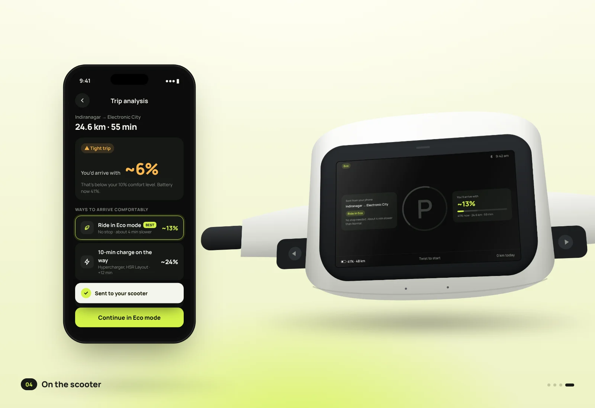
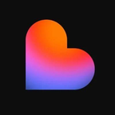

<title>Jeshmi Hamitkhani · Product Designer, B2B SaaS &amp; AI</title>
<meta name="description" content="Product designer in Bengaluru. I design the decision, not the dashboard. B2B SaaS and AI products — one shipped and live.">
<link rel="icon" type="image/png" sizes="32x32" href="favicon-32.png">
<link rel="icon" type="image/png" sizes="192x192" href="favicon-192.png">
<link rel="apple-touch-icon" href="apple-touch-icon.png">
<meta property="og:type" content="website">
<meta property="og:url" content="https://jeshmiportfolio.vercel.app/">
<meta property="og:title" content="Jeshmi Hamitkhani · Product Designer, B2B SaaS &amp; AI">
<meta property="og:description" content="I design the decision, not the dashboard. B2B SaaS and AI products — one shipped and live.">
<meta property="og:image" content="https://jeshmiportfolio.vercel.app/og.jpg?v=2">
<meta name="twitter:card" content="summary_large_image">
<link rel="preconnect" href="https://fonts.googleapis.com"><link rel="preconnect" href="https://fonts.gstatic.com" crossorigin>
<link href="https://fonts.googleapis.com/css2?family=Inter+Tight:wght@400;500;600;700&family=JetBrains+Mono:wght@400;500;700&display=swap" rel="stylesheet">
<style>
:root{
  /* the meadow is the palette: cream ground, deep green, blooms for accent */
  --bg:#F7F4EC; --ink:#1B2317; --mid:#6E7A66; --faint:#9DA795; --hair:rgba(76,122,51,.18);
  --grn:#3F6A2A; --grn-l:#5E8F42; --bloom:#CE5287; --sun:#D79E12;
  --gut:clamp(20px,4.6vw,76px);
  --sans:'Inter Tight',system-ui,-apple-system,sans-serif;
  --mono:'JetBrains Mono',ui-monospace,SFMono-Regular,monospace;
}
@media (prefers-color-scheme:dark){:root:not([data-theme="light"]){
  --bg:#121610;--ink:#EDF2E8;--mid:#8D9A85;--faint:#66735E;--hair:rgba(140,192,106,.2);
  --grn:#8CC06A;--grn-l:#A6D487;--bloom:#F08CB4;--sun:#E8BC44}}
:root[data-theme="dark"]{--bg:#121610;--ink:#EDF2E8;--mid:#8D9A85;--faint:#66735E;
  --hair:rgba(140,192,106,.2);--grn:#8CC06A;--grn-l:#A6D487;--bloom:#F08CB4}
*{margin:0;padding:0;box-sizing:border-box}
html{scroll-behavior:smooth;-webkit-text-size-adjust:100%}
body{background:var(--bg);color:var(--ink);font-family:var(--sans);line-height:1.55;
  overflow-x:hidden;-webkit-font-smoothing:antialiased;font-size:16px}
a{color:inherit}
::selection{background:var(--grn);color:#fff}
.lbl{font-family:var(--mono);font-size:11px;letter-spacing:.14em;text-transform:uppercase;color:var(--faint)}

/* ── nav ── */
.nav{position:sticky;top:0;z-index:50;display:flex;justify-content:space-between;align-items:center;
  gap:20px;padding:14px var(--gut);background:color-mix(in srgb,var(--bg) 88%,transparent);
  backdrop-filter:blur(12px);border-bottom:1px solid var(--hair)}
.nav .id{display:flex;align-items:center;gap:10px;font-size:14px;font-weight:600;text-decoration:none;letter-spacing:-.01em}
.nav .id canvas{width:24px;height:24px;display:block;flex:none}
.nav ul{display:flex;gap:clamp(13px,2.2vw,28px);list-style:none;align-items:center}
.nav a.l{font-family:var(--mono);font-size:11px;letter-spacing:.1em;text-transform:uppercase;
  color:var(--mid);text-decoration:none;transition:color .2s;white-space:nowrap}
.nav a.l:hover{color:var(--grn)}
.nav a.cta{color:#fff;background:var(--grn);padding:8px 14px;border-radius:5px;font-weight:500}
.nav a.cta:hover{color:#fff;background:var(--grn-l)}
@media (max-width:620px){.nav li:nth-child(2),.nav li:nth-child(3){display:none}}

/* ── hero: you arrive standing in the field ── */
.hero{display:flex;flex-direction:column;min-height:calc(100svh - 55px);padding:clamp(44px,9vh,104px) var(--gut) 0}
.eyebrow{font-family:var(--mono);font-size:11px;letter-spacing:.17em;text-transform:uppercase;color:var(--grn);font-weight:500}
h1{margin-top:clamp(18px,3vh,34px);font-size:clamp(34px,6.1vw,86px);line-height:1.02;
  letter-spacing:-.04em;font-weight:600;max-width:15ch}
h1 .ln{display:block;overflow:hidden}
h1 .ln>span{display:block;transform:translateY(110%);transition:transform 1s cubic-bezier(.16,1,.3,1)}
.go h1 .ln>span{transform:none}
h1 .ln:nth-child(2)>span{transition-delay:.09s}
h1 em{font-style:normal;color:var(--grn)}
.lead{max-width:50ch;margin-top:clamp(20px,3vh,32px);font-size:clamp(16px,1.35vw,19px);
  line-height:1.62;color:var(--mid);opacity:0;transition:opacity .8s ease .5s}
.go .lead{opacity:1}
.lead b{color:var(--ink);font-weight:500}
.status{display:flex;flex-wrap:wrap;gap:10px 22px;align-items:center;margin-top:clamp(20px,3vh,30px);
  font-family:var(--mono);font-size:11.5px;letter-spacing:.06em;color:var(--mid);
  opacity:0;transition:opacity .8s ease .72s}
.go .status{opacity:1}
.status i{width:7px;height:7px;border-radius:50%;background:var(--grn-l);
  box-shadow:0 0 0 4px color-mix(in srgb,var(--grn-l) 20%,transparent);display:inline-block;margin-right:9px}
.status s{text-decoration:none;color:var(--faint)}

.field{margin-top:auto;width:100vw;margin-left:calc(50% - 50vw);position:relative}
.field canvas{display:block;width:100%;height:clamp(168px,26vh,262px)}

/* ── sections ── */
section{padding:clamp(70px,11vh,136px) var(--gut) 0}
.sh{padding-bottom:18px;border-bottom:1px solid var(--hair)}
.sh h2{font-size:clamp(23px,2.7vw,34px);letter-spacing:-.034em;font-weight:600;max-width:20ch}
.sh p{color:var(--mid);font-size:15px;margin-top:7px;max-width:56ch}
.rv{opacity:0;transform:translateY(18px);transition:opacity .7s ease,transform .7s cubic-bezier(.16,1,.3,1)}
.rv.in{opacity:1;transform:none}

/* ── work, as chapters ── */
.ch{padding:clamp(34px,5.2vw,66px) 0;border-bottom:1px solid var(--hair)}
.ch:last-child{border-bottom:0}
.ch .hd{display:flex;justify-content:space-between;align-items:baseline;gap:16px;flex-wrap:wrap}
.ch .no{font-family:var(--mono);font-size:12.5px;letter-spacing:.16em;color:var(--grn);font-weight:700}
.ch .on{color:var(--grn);font-weight:700}
.ch h3{margin-top:12px;font-size:clamp(22px,3vw,40px);letter-spacing:-.034em;font-weight:600;
  line-height:1.12;max-width:21ch;transition:color .25s}
.ch a:hover h3{color:var(--grn)}
.ch .bd{display:grid;grid-template-columns:minmax(0,1.32fr) minmax(0,1fr);
  gap:clamp(20px,3.6vw,54px);align-items:start;margin-top:clamp(20px,2.6vw,32px)}
.ch.flip .media{order:2}
.media{position:relative;display:block;border-radius:13px;overflow:hidden;aspect-ratio:16/10;
  background:color-mix(in srgb,var(--ink) 5%,transparent);text-decoration:none}
.media img,.media video{display:block;width:100%;height:100%;object-fit:cover;object-position:top center}
.media video{position:absolute;inset:0;opacity:0;transition:opacity .5s}
.media video.on{opacity:1}
.ch .tx p{color:var(--mid);font-size:15.5px;line-height:1.62;max-width:46ch}
.ch .mx{display:block;margin-top:18px;padding-top:16px;border-top:1px solid var(--hair);
  font-family:var(--mono);font-size:17px;font-weight:700;color:var(--ink)}
.ch .mx em{display:block;font-style:normal;font-weight:400;color:var(--faint);
  font-size:11.5px;letter-spacing:.05em;margin-top:4px}
.ch .tg{display:flex;flex-wrap:wrap;gap:6px;margin-top:16px}
.ch .tg span{font-family:var(--mono);font-size:10px;letter-spacing:.1em;text-transform:uppercase;
  color:var(--mid);border:1px solid var(--hair);border-radius:99px;padding:4px 10px}
.ch .go2{display:inline-block;margin-top:18px;font-size:14px;font-weight:500;color:var(--grn);
  text-decoration:none;border-bottom:1px solid transparent;transition:border-color .25s}
.ch a.go2:hover{border-color:var(--grn)}

/* ── how I work ── */
.beats{display:grid;grid-template-columns:repeat(auto-fit,minmax(230px,1fr));
  gap:clamp(18px,3vw,44px);padding-top:clamp(26px,4vw,46px)}
.beat .n{font-family:var(--mono);font-size:11.5px;letter-spacing:.14em;color:var(--grn);font-weight:700}
.beat h3{font-size:18px;font-weight:600;letter-spacing:-.018em;margin-top:9px}
.beat p{color:var(--mid);font-size:14.5px;line-height:1.6;margin-top:7px}
.said{margin-top:clamp(40px,6vw,76px);font-size:clamp(19px,2.3vw,28px);line-height:1.38;
  letter-spacing:-.024em;font-weight:500;max-width:26ch}
.said b{color:var(--grn);font-weight:500}

/* ── timeline ── */
.xp{list-style:none;padding-top:clamp(18px,3vw,30px)}
.xp li{display:grid;grid-template-columns:minmax(0,150px) minmax(0,1fr);gap:clamp(14px,3vw,46px);
  padding:clamp(18px,2.4vw,28px) 0;border-bottom:1px solid var(--hair)}
.xp .when{font-family:var(--mono);font-size:11px;letter-spacing:.08em;text-transform:uppercase;color:var(--faint);line-height:1.75}
.xp .when b{display:block;color:var(--mid);font-weight:500}
.xp h3{font-size:17px;font-weight:600;letter-spacing:-.015em}
.xp p{color:var(--mid);font-size:14.5px;line-height:1.6;margin-top:6px;max-width:66ch}
.nda{display:grid;grid-template-columns:repeat(auto-fit,minmax(145px,1fr));gap:10px;margin-top:14px}
.nda div{border:1px solid var(--hair);border-radius:8px;padding:11px 13px}
.nda dt{font-family:var(--mono);font-size:9.5px;letter-spacing:.11em;text-transform:uppercase;color:var(--faint)}
.nda dd{font-size:13.5px;margin-top:4px;line-height:1.45}
.nda dd b{color:var(--grn);font-weight:600}
.tools{display:flex;flex-wrap:wrap;gap:8px;padding-top:clamp(18px,3vw,28px)}
.tools span{display:inline-flex;align-items:center;gap:8px;border:1px solid var(--hair);border-radius:99px;
  padding:7px 14px 7px 9px;font-size:13px;color:var(--mid)}
.tools img{width:17px;height:17px;border-radius:4px;display:block}
.tools b{color:var(--ink);font-weight:500}

/* ── side quests ── */
.sq{display:grid;grid-template-columns:repeat(auto-fit,minmax(248px,1fr));gap:clamp(12px,1.8vw,20px);padding-top:clamp(22px,3vw,34px)}
.qd{border:1px solid var(--hair);border-radius:13px;overflow:hidden;text-decoration:none;transition:border-color .25s,transform .25s}
.qd:hover{border-color:var(--grn);transform:translateY(-3px)}
.qd .im{display:block;aspect-ratio:16/10;overflow:hidden;background:color-mix(in srgb,var(--ink) 5%,transparent)}
.qd .im img{width:100%;height:100%;object-fit:cover;display:block}
.qd .bd{display:block;padding:14px 16px 18px}
.qd .lbl{display:block}
.qd h4{font-size:15.5px;font-weight:600;margin-top:6px;letter-spacing:-.012em;line-height:1.32}
.qd p{color:var(--mid);font-size:13.5px;margin-top:6px;line-height:1.5}
.qd .bt{display:inline-block;margin-top:11px;font-family:var(--mono);font-size:10px;letter-spacing:.09em;
  text-transform:uppercase;color:var(--faint)}

/* ── close ── */
.end{padding:clamp(74px,12vh,146px) var(--gut) 0}
.end .k{display:inline-flex;align-items:center;gap:9px;font-size:13px;color:var(--mid);margin-bottom:16px}
.end .k i{width:7px;height:7px;border-radius:50%;background:var(--grn-l);
  box-shadow:0 0 0 4px color-mix(in srgb,var(--grn-l) 20%,transparent)}
.end h2{font-size:clamp(31px,5.6vw,76px);letter-spacing:-.042em;font-weight:600;line-height:1.03;max-width:15ch}
.end h2 a{color:var(--grn);text-decoration:none;border-bottom:2px solid transparent;transition:border-color .3s}
.end h2 a:hover{border-color:var(--grn)}
.det{display:grid;grid-template-columns:repeat(auto-fit,minmax(190px,1fr));gap:4px 26px;
  margin-top:clamp(34px,5vw,60px);padding-top:20px;border-top:1px solid var(--hair)}
.det > div{padding:11px 0}
.det dt{font-family:var(--mono);font-size:10px;letter-spacing:.11em;text-transform:uppercase;color:var(--faint)}
.det dd{margin-top:4px;font-size:14.5px;display:flex;align-items:center;gap:9px;flex-wrap:wrap}
.det a{text-decoration:none;border-bottom:1px solid var(--hair)}
.det a:hover{border-color:var(--grn);color:var(--grn)}
.cp{font-family:var(--mono);font-size:10px;letter-spacing:.06em;color:var(--mid);
  background:color-mix(in srgb,var(--ink) 7%,transparent);
  border:0;border-radius:99px;padding:4px 9px;cursor:pointer}
.cp:hover{background:color-mix(in srgb,var(--ink) 13%,transparent)}
.foot{display:flex;justify-content:space-between;flex-wrap:wrap;gap:12px;margin-top:42px;
  font-family:var(--mono);font-size:10.5px;letter-spacing:.07em;text-transform:uppercase;color:var(--faint)}
.meadow{width:100vw;margin-left:calc(50% - 50vw);margin-top:28px}
.meadow canvas{display:block;width:100%;height:clamp(156px,22vh,240px)}

@media (max-width:620px){
  /* no dead space above the field on a phone — let it follow the words */
  .hero{min-height:auto}
  .field{margin-top:clamp(44px,9vh,76px)}
}
@media (max-width:880px){
  .ch .bd{grid-template-columns:1fr;gap:18px}
  .ch.flip .media{order:0}
  .ch .mx{margin-top:4px}
  .xp li{grid-template-columns:1fr;gap:8px}
}
@media (prefers-reduced-motion:reduce){
  h1 .ln>span,.lead,.status,.rv{transform:none!important;opacity:1!important;transition:none}
}
</style>

<nav class="nav">
  <a class="id" href="#top"><canvas id="mk" width="48" height="48" aria-hidden="true"></canvas>Jeshmi Hamitkhani</a>
  <ul>
    <li><a class="l" href="#work">Work</a></li>
    <li><a class="l" href="#about">About</a></li>
    <li><a class="l" href="#play">Side quests</a></li>
    <li><a class="l cta" href="mailto:design.jeshmi@gmail.com?subject=Hello%20Jeshmi">Contact me</a></li>
  </ul>
</nav>

<header class="hero" id="top">
  <p class="eyebrow">Jeshmi Hamitkhani — Product designer, Bengaluru</p>
  <h1>
    <span class="ln"><span>I design the decision,</span></span>
    <span class="ln"><span><em>not the dashboard.</em></span></span>
  </h1>
  <p class="lead">Most tools hand you a wall of numbers and call it insight. I look for the
    one call that actually has to be made, and build everything around it — <b>then I write
    the code and ship it.</b></p>
  <p class="status"><span><i></i>Open to product design roles</span><s>Three projects below. One of them is live.</s></p>
  <div class="field"><canvas id="fieldC" aria-hidden="true"></canvas></div>
</header>

<section id="work">
  <div class="sh rv">
    <h2>Three problems I couldn't put down</h2>
    <p>Each one started the same way: someone was staring at a screen full of data, trying to work out what to actually do.</p>
  </div>

  <article class="ch rv">
    <div class="hd"><span class="no">01 — RetailPilot</span><span class="lbl on">● Shipped and live</span></div>
    <a href="rp.html" style="text-decoration:none"><h3>Reducing merchant decision latency and capital risk</h3></a>
    <div class="bd">
      <a class="media" href="rp.html" aria-label="RetailPilot case study">
        
        <video data-vid data-src="img/cover-rp-motion.mp4" data-src-m="img/cover-rp-motion-m.mp4" muted loop playsinline preload="none" aria-hidden="true"></video>
      </a>
      <div class="tx">
        <p>Store owners were reading six dashboards to answer one question: what do I reorder
          today? I turned every stock problem into a single card — what's happening, how sure
          we are, what waiting costs, and the order to place. Then I built it and put it in
          front of real people.</p>
        <span class="mx">30 → 3 min<em>per reorder decision, in walkthroughs</em></span>
        <span class="tg"><span>AI</span><span>B2B SaaS</span><span>IIT Hyderabad capstone</span><span>Designed &amp; built</span></span>
        <a class="go2" href="rp.html">Read the case study →</a>
      </div>
    </div>
  </article>

  <article class="ch flip rv">
    <div class="hd"><span class="no">02 — Trip Confidence</span><span class="lbl">Product concept</span></div>
    <a href="trip.html" style="text-decoration:none"><h3>"Can I make this trip confidently?"</h3></a>
    <div class="bd">
      <a class="media" href="trip.html" aria-label="Trip Confidence case study">
        
        <video data-vid data-src="img/cover-ola-motion.mp4" data-src-m="img/cover-ola-motion-m.mp4" muted loop playsinline preload="none" aria-hidden="true"></video>
      </a>
      <div class="tx">
        <p>EV riders don't want a battery percentage — they want a yes or a no. I designed a
          trip check that weighs distance, terrain, traffic and riding style, then answers
          with one verdict and one action, on the scooter dashboard and in the app.</p>
        <span class="mx">1 verdict<em>instead of a battery % riders decode by hand</em></span>
        <span class="tg"><span>Mobile · EV</span><span>Strategy</span><span>UX</span><span>Interaction</span></span>
        <a class="go2" href="trip.html">Read the case study →</a>
      </div>
    </div>
  </article>

  <article class="ch rv">
    <div class="hd"><span class="no">03 — Pulse</span><span class="lbl">Product concept</span></div>
    <a href="pulse.html" style="text-decoration:none"><h3>Turning MetricKit data into diagnostics you can act on</h3></a>
    <div class="bd">
      <a class="media" href="pulse.html" aria-label="Pulse case study">
        
      </a>
      <div class="tx">
        <p>Performance tools report metrics and then guess at causes. I built a macOS
          workspace around the regression itself, and made it say honestly how confident it
          is instead of inventing a root cause nobody can verify.</p>
        <span class="mx">7 → 1<em>pieces of context, one workspace</em></span>
        <span class="tg"><span>Dev tools</span><span>Strategy</span><span>IA</span><span>UX · UI</span></span>
        <a class="go2" href="pulse.html">Read the case study →</a>
      </div>
    </div>
  </article>
</section>

<section id="about">
  <div class="sh rv">
    <h2>How I work</h2>
    <p>Three things happen before I open Figma, and they're the reason the screens come out simple.</p>
  </div>
  <div class="beats">
    <div class="beat rv"><span class="n">01</span>
      <h3>Find the decision</h3>
      <p>Before any screen, I write down the call the user has to make. If I can't say it in one sentence, I don't understand the problem yet.</p></div>
    <div class="beat rv"><span class="n">02</span>
      <h3>Cut until it's clear</h3>
      <p>Then I remove everything that isn't helping them make it. Most dashboards are a pile of things nobody asked for.</p></div>
    <div class="beat rv"><span class="n">03</span>
      <h3>Prove it, then build it</h3>
      <p>I test with real people before I call it done — and when I can, I ship it in code myself rather than handing over a picture.</p></div>
  </div>
  <p class="said rv">I started in graphic design, moved into UX, and spent the last year at IIT Hyderabad
    learning to think in systems. Somewhere in there I started <b>building the things I designed.</b></p>
</section>

<section id="path">
  <div class="sh rv"><h2>How I got here</h2></div>
  <ul class="xp">
    <li class="rv"><span class="when">Jul 2025 – now<b>Contract</b></span>
      <div><h3>Product &amp; UX designer, with a small design team</h3>
      <p>Own features end to end across three client engagements: requirements from founders, problem statements, wireframes, high-fidelity prototypes and dev-ready Figma handoff. Client work is under NDA.</p></div></li>
    <li class="rv"><span class="when">Jul 2025 – Jul 2026<b>Education</b></span>
      <div><h3>PG diploma in Visual Design and User Experience, IIT Hyderabad</h3>
      <p>Alongside contract work. My capstone was RetailPilot, which I later built and shipped.</p></div></li>
    <li class="rv"><span class="when">Aug 2024 – Jan 2025<b>Employment</b></span>
      <div><h3>UX designer, Innovatum</h3>
      <dl class="nda">
        <div><dt>Problem</dt><dd>Users were dropping off before finishing key tasks.</dd></div>
        <div><dt>Diagnosis</dt><dd>A wayfinding problem, not a content gap.</dd></div>
        <div><dt>What I did</dt><dd>Restructured the information architecture and navigation around task priority.</dd></div>
        <div><dt>Result</dt><dd><b>Task completion rose 27%.</b> Shipped to real users.</dd></div>
      </dl>
      <p>Under NDA, so no screens here. Happy to walk through it on a call.</p></div></li>
    <li class="rv"><span class="when">Jan 2023 – Jun 2024<b>Freelance · Fiverr</b></span>
      <div><h3>Graphic designer</h3>
      <p>Brand identities, landing pages and digital assets for small businesses. Where my visual craft in type, layout and colour comes from.</p></div></li>
  </ul>
  <div class="tools rv">
    <span>Figma <b>&nbsp;flows into screens</b></span>
    <span>Framer <b>&nbsp;design to live site</b></span>
    <span>Lovable <b>&nbsp;fast prototypes</b></span>
    <span>Cursor <b>&nbsp;closer to the code</b></span>
    <span>Antigravity <b>&nbsp;agent-first building</b></span>
    <span>Claude <b>&nbsp;messy problems</b></span>
    <span>ChatGPT <b>&nbsp;copy and edge cases</b></span>
  </div>
</section>

<section id="play">
  <div class="sh rv">
    <h2>Side quests</h2>
    <p>Things I make when nobody's asking — usually because something annoyed me enough to redesign it.</p>
  </div>
  <div class="sq">
    <a class="qd rv" href="blinkit.html"><span class="im"></span>
      <span class="bd"><span class="lbl">Side quest 01 · Commerce, AI</span>
      <h4>What if Blinkit delivered a chowmein kit with an AI cooking buddy?</h4>
      <p>Recipe, basket and guided cooking in one flow.</p><span class="bt">Built with Lovable</span></span></a>
    <a class="qd rv" href="toing.html"><span class="im"></span>
      <span class="bd"><span class="lbl">Side quest 02 · Consumer, social</span>
      <h4>What if ordering together took just a few steps?</h4>
      <p>Group orders without the group chat, with the bill split for you.</p><span class="bt">Working checkout prototype</span></span></a>
    <a class="qd rv" href="reelix.html"><span class="im"></span>
      <span class="bd"><span class="lbl">Side quest 03 · Streaming</span>
      <h4>What if free streaming never ambushed you with an ad?</h4>
      <p>Picks that explain themselves, ads you can see coming, and paying only when you choose to.</p><span class="bt">Built with Claude Code</span></span></a>
  </div>
</section>

<footer class="end" id="contact">
  <span class="k"><i></i>Open to product design roles in Bengaluru</span>
  <h2>Let's ship something. <a href="mailto:design.jeshmi@gmail.com?subject=Hello%20Jeshmi">Say hello →</a></h2>
  <dl class="det">
    <div><dt>Email</dt><dd><a href="mailto:design.jeshmi@gmail.com">design.jeshmi@gmail.com</a><button class="cp" type="button" data-copy="design.jeshmi@gmail.com"><span data-copy-label>Copy</span></button></dd></div>
    <div><dt>Phone</dt><dd><a href="tel:+919035362675">+91 90353 62675</a></dd></div>
    <div><dt>LinkedIn</dt><dd><a href="https://www.linkedin.com/in/jeshmi-hamitkhani-3548a730b/" target="_blank" rel="noopener">Jeshmi Hamitkhani ↗</a></dd></div>
    <div><dt>Resume</dt><dd><a href="Jeshmi_Hamitkhani_Resume.pdf" target="_blank" rel="noopener">Download PDF ↗</a></dd></div>
  </dl>
  <div class="foot"><span>© 2026 Jeshmi Hamitkhani</span><span>Designed and built by me</span></div>
  <div class="meadow"><canvas id="meadowC" aria-hidden="true"></canvas></div>
</footer>

<script>
/* ═══ one seeded pixel engine — the meadow, drawn at two distances ═══ */
const mul=a=>()=>{a=a+0x6D2B79F5|0;let t=Math.imul(a^a>>>15,1|a);t=t+Math.imul(t^t>>>7,61|t)^t;return((t^t>>>14)>>>0)/4294967296};
const noise=r=>{const p=Array.from({length:512},r);
  return x=>{const i=Math.floor(x),f=x-i,s=f*f*(3-2*f);return p[i&511]*(1-s)+p[(i+1)&511]*s}};
const fbm=(n,x,o)=>{let v=0,a=.5,f=1,s=0;for(let i=0;i<o;i++){v+=n(x*f)*a;s+=a;a*=.5;f*=2}return v/s};
const hx=c=>[1,3,5].map(i=>parseInt(c.substr(i,2),16));
const mix=(c1,c2,t)=>{const[a,b,c]=hx(c1),[d,e,f]=hx(c2);
  return`rgb(${Math.round(a+(d-a)*t)},${Math.round(b+(e-b)*t)},${Math.round(c+(f-c)*t)})`};

function meadow(cv,seed,o){
  o=o||{};
  const ctx=cv.getContext('2d');const PX=o.px||6;
  const DENS=o.dens==null?0.72:o.dens, BIG=o.big!==false;
  const G=['#D3E6BC','#4C7A33'];
  const PETAL=['#FFFFFF','#FFFFFF','#FFFFFF','#FDF6E6','#F49BC0','#F9C9DD','#F6C945'];
  const CEN=['#F6C945','#F6C945','#FBD76B','#CE5287'];
  let cols,rows,W,H,fl=[];
  const P=(x,y,c)=>{if(x<0||x>=cols||y<0||y>=rows)return;ctx.fillStyle=c;ctx.fillRect(x*PX,y*PX,PX-1,PX-1)};
  function build(){
    const dpr=Math.min(2,devicePixelRatio||1);W=cv.clientWidth;H=cv.clientHeight;
    if(!W||!H)return false;
    cv.width=W*dpr;cv.height=H*dpr;ctx.setTransform(dpr,0,0,dpr,0,0);ctx.clearRect(0,0,W,H);
    cols=Math.ceil(W/PX);rows=Math.ceil(H/PX);fl=[];
    const LN=5;
    for(let L=0;L<LN;L++){
      const d=L/(LN-1), r=mul(seed+L*101), n=noise(mul(seed+L*57));
      const amp=rows*(0.05+d*0.09), base=rows*(0.20+d*0.34), tops=[];
      for(let cx=0;cx<cols;cx++){
        const top=Math.max(0,Math.round(base-Math.round(fbm(n,(cx+L*19)/13,3)*amp)));
        tops.push(top);
        for(let cy=top;cy<rows;cy++){
          if(L===0){const e=cy-top;if(e<5&&r()>(e+1)/6)continue;}
          P(cx,cy,mix(G[0],G[1],Math.min(1,0.12+d*0.34+(cy-top)/Math.max(1,rows-top)*0.75)));
        }
      }
      const size=d<0.3?1:d<0.66?2:3, nf=Math.round(cols*DENS*(0.45+d));
      for(let i=0;i<nf;i++){
        const cx=Math.floor(r()*cols),top=tops[cx];
        const cy=top+Math.floor(r()*Math.max(2,Math.round((rows-top)*0.5)));
        fl.push({cx,cy,size,d,pc:PETAL[Math.floor(r()*PETAL.length)],cc:CEN[Math.floor(r()*CEN.length)],
          stem:mix(G[0],G[1],Math.min(1,0.55+d*0.3)),st:1+Math.floor(r()*3)});
      }
    }
    if(BIG){
      const rb=mul(seed*13+7);
      for(let i=0,nb=Math.max(5,Math.round(cols/26));i<nb;i++)
        fl.push({cx:Math.floor(rb()*cols),cy:Math.round(rows*(0.72+rb()*0.2)),size:4,d:1,
          pc:rb()>0.26?'#FFFFFF':'#F49BC0',cc:rb()>0.3?'#F6C945':'#CE5287',
          stem:mix(G[0],G[1],0.92),st:2+Math.floor(rb()*3)});
    }
    fl.sort((a,b)=>a.d-b.d);
    return true;
  }
  function paint(n){
    for(let i=0;i<n&&i<fl.length;i++){
      const f=fl[i];
      if(f.size===1){P(f.cx,f.cy,f.pc);continue}
      if(f.size===2){P(f.cx,f.cy-1,f.pc);P(f.cx-1,f.cy,f.pc);P(f.cx+1,f.cy,f.pc);
        P(f.cx,f.cy+1,f.pc);P(f.cx,f.cy,f.cc);P(f.cx,f.cy+2,f.stem);continue}
      if(f.size===3){for(let a=-1;a<=1;a++)for(let b=-1;b<=1;b++)if(a||b)P(f.cx+a,f.cy+b,f.pc);
        P(f.cx,f.cy,f.cc);for(let s=2;s<2+f.st;s++)P(f.cx,f.cy+s,f.stem);continue}
      [[0,-2],[-1,-1],[0,-1],[1,-1],[-2,0],[-1,0],[1,0],[2,0],[-1,1],[0,1],[1,1],[0,2]]
        .forEach(([a,b])=>P(f.cx+a,f.cy+b,f.pc));
      P(f.cx,f.cy,f.cc);for(let s=3;s<3+f.st;s++)P(f.cx,f.cy+s,f.stem);
    }
  }
  let done=false;
  function play(){
    if(done||!build())return;done=true;
    if(matchMedia('(prefers-reduced-motion: reduce)').matches){paint(fl.length);return}
    const t0=performance.now();
    const step=now=>{const p=Math.min(1,(now-t0)/1500);
      paint(Math.round(fl.length*(1-Math.pow(1-p,3))));if(p<1)requestAnimationFrame(step)};
    requestAnimationFrame(step);
  }
  let rt;addEventListener('resize',()=>{clearTimeout(rt);rt=setTimeout(()=>{if(done&&build())paint(fl.length)},180)});
  return {play};
}

/* ── wire it up ── */
(function(){  /* nav mark: a single pixel daisy from the field */
  const cv=document.getElementById('mk');if(!cv)return;
  const d=Math.min(2,devicePixelRatio||1),S=24,N=8,u=S/N;
  cv.width=S*d;cv.height=S*d;const c=cv.getContext('2d');c.setTransform(d,0,0,d,0,0);
  const put=(x,y,col)=>{c.fillStyle=col;c.fillRect(x*u,y*u,u-.7,u-.7)};
  /* petals in bloom pink so the mark reads on a cream ground, yellow heart, green stem */
  [[3,0],[2,1],[3,1],[4,1],[1,2],[2,2],[4,2],[5,2],[2,3],[3,3],[4,3],[3,4]]
    .forEach(([x,y])=>put(x,y,'#D9578E'));
  put(3,2,'#F2B61E');
  [[3,5],[3,6],[3,7]].forEach(([x,y])=>put(x,y,'#4C7A33'));
  put(2,6,'#6E9B4C');
})();

/* the hero field is the same meadow seen from further off; the footer is up close */
const fieldM=meadow(document.getElementById('fieldC'),77,{dens:.52,big:false,px:5});
const footM=meadow(document.getElementById('meadowC'),318,{dens:.78,big:true,px:6});
new IntersectionObserver((es,ob)=>es.forEach(e=>{if(e.isIntersecting){footM.play();ob.disconnect()}}),{threshold:.15})
  .observe(document.getElementById('meadowC'));

requestAnimationFrame(()=>{document.body.classList.add('go');setTimeout(()=>fieldM.play(),240)});

/* reveals */
document.querySelectorAll('.rv').forEach((el,i)=>{
  new IntersectionObserver((es,ob)=>es.forEach(e=>{
    if(e.isIntersecting){setTimeout(()=>e.target.classList.add('in'),(i%3)*90);ob.disconnect()}
  }),{threshold:.14}).observe(el);
});

/* chapters play their product footage when they scroll in */
if(!matchMedia('(prefers-reduced-motion: reduce)').matches){
  const io=new IntersectionObserver(es=>es.forEach(e=>{
    const v=e.target;
    if(e.isIntersecting){
      if(!v.src){const s=innerWidth<800?v.dataset.srcM:v.dataset.src;
        v.src=v.canPlayType('video/mp4; codecs="avc1.42E01E"')?s:s.replace('.mp4','.webm');
        v.addEventListener('playing',()=>v.classList.add('on'),{once:true});}
      v.play().catch(()=>{});
    } else v.pause();
  }),{threshold:.3});
  document.querySelectorAll('[data-vid]').forEach(v=>io.observe(v));
}

/* copy email */
document.querySelectorAll('[data-copy]').forEach(b=>b.addEventListener('click',e=>{
  e.preventDefault();navigator.clipboard?.writeText(b.dataset.copy);
  const l=b.querySelector('[data-copy-label]');if(!l)return;
  l.textContent='Copied';setTimeout(()=>l.textContent='Copy',2000);
}));
</script>
